CinemAll App
The Challenge
To enjoy a movie, the visually impaired moviegoers currently need to rent theater-provided descriptive video devices , which often have technical problems that disrupt an immersive movie watching experience.
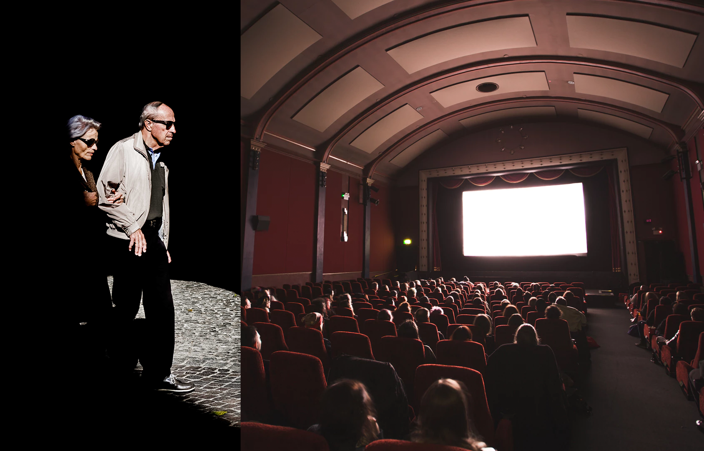Movie watching experience for the visually impaired is less ideal.Our Hypothesis
We hypothesis that this mobile app will help to improve the theater ticket sales by encouraging more visually impaired moviegoers to the theaters, and thus build a stronger brand loyalty for theater companies like Regal, Landmark and so on.
Our Solution
Rather than utilizing the in-theater DVS headsets, by leveraging on users’ own mobile phone, we should be able to improve the immersive movie watching experience in reducing customer-staff interaction and the possibility of device malfunction.
Key Features
Rather than utilizing the in-theater DVS headsets, by leveraging on users’ own mobile phone, we should be able to improve the immersive movie watching experience in reducing customer-staff interaction and the possibility of device malfunction.

One Tap To Access to DVS
Users are looking for the quickest way to access to their DVS. By colloborating with theater partners like Landmark, Regal, AMC and so on, we aim to obtain ticket purchase history to reduce users' input. On openning the app, the DVS that they require is right at hand.
Multiple Methods to Add New DVS
For users who purchase offline or didn't find the synced movie ticket due to potential error, several methods are provided to gurantee that users can request the DVS as soon as possible.
Theater Help for Emergency
The app also leveraging on theater help to solve all types of emergency, a conversation based option is able to reduce the panic in situations where users don't know how to fix an error.Design Process Overview
01 Identify User Pain Points
Through secondary research and discovered several typical types of visually impairments. How their vision different than normal vision are illustrated as the followings. We concluded that our target users range in age from 18 and up, have the normal hearing function, span all genders, have anxieties about going to a movie theater, and may or may not bring a companion with them.
Against their wish of being independent, the renting process requires the visually impaired rely on theater associates inevitably.
 Many service provider like Apple strives to promote independence for the visually impaired through features like Voice Over (in the left). Acquiring headsets from theater associates still remain as an inevitable step when the visually impaired need DVS service.
Many service provider like Apple strives to promote independence for the visually impaired through features like Voice Over (in the left). Acquiring headsets from theater associates still remain as an inevitable step when the visually impaired need DVS service.
Limited by hardware technology, the malfunction of the DVS headsets often disrupt the watching experience, which is supposed to be immersive.
 Secret Cinema is pioneering in creating immersive real scene experience for moviegoers, inviting them to dressup and interact with actors as the plots develop(in the left). However, the visually impaired moviegoers have to leave their seat when the DVS headsets are not working in the mid of a traditional movie (in the right).
Secret Cinema is pioneering in creating immersive real scene experience for moviegoers, inviting them to dressup and interact with actors as the plots develop(in the left). However, the visually impaired moviegoers have to leave their seat when the DVS headsets are not working in the mid of a traditional movie (in the right).
1.1 Secondary Analysis
Through secondary research and discovered several typical types of visually impairments. How their vision different than normal vision are illustrated as the followings. We concluded that our target users range in age from 18 and up, have the normal hearing function, span all genders, have anxieties about going to a movie theater, and may or may not bring a companion with them.
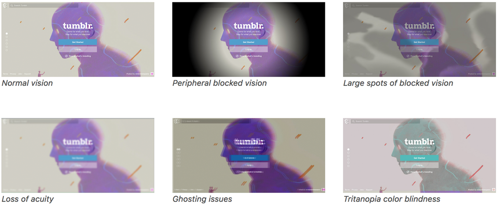1.2 Semi-Structured Interview
fter our user interviews, I introduced the concept of User Journey to the team, which can visualize and summaries the interactions between the visually impaired moviegoers and the theaters in a timeline span. To discover the pattern of what users value, we then worked as a group on an affinity diagram, the result of which becomes our most pioritized design guidelines.
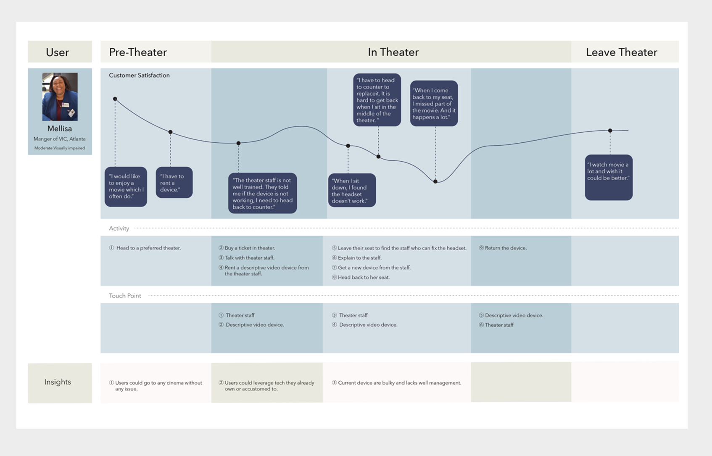1.3 Affinity Diagram
We conducted an interpretation of the previous user interviews. Then we used the Affinity Mapping to create a visual representation of the problem space and see if any patterns emerged. And the following problem patterns emerged: 1) Visually impaired moviegoers want to be prepared when they go to a movie theater. 2)Visually impaired moviegoers have difficulty acquiring appropriate DV devices in theater. 3) Visually impaired moviegoers struggle managing situations when their devices malfunction.
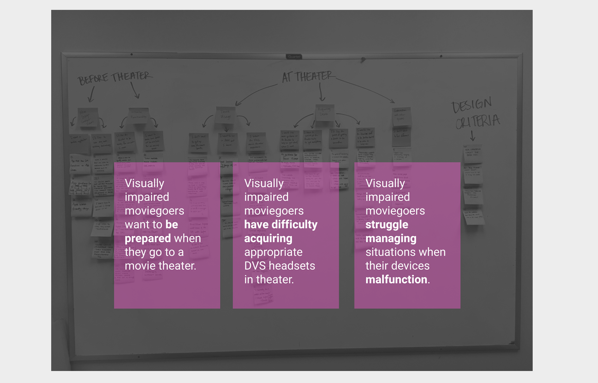1.3 Marketing Analysis
The only app on market for DVS launched in 2017, March (four months before our project). I analyzed through the app reviews and discovered that many customers mentioned they expected more content while achieving a 4.8 out of 5 rating.
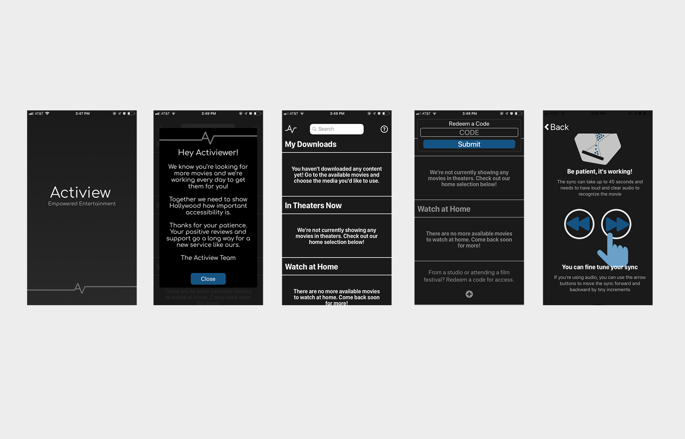02. Design Direction Identification
In-theater Audio Streaming App, cutting out existing devices
This solution aims to cut down on the learning curve by using the device users already have with them, their smartphone. Users won’t need to lug around additional clunky devices. This solution will also cut out the need to interact with theater associates who often provide incorrectly configured devices for the users.
Comparing different prototype tools, including Axure, Framer, Invision and JustInMind, we discovered that JustInMind has the function to include audio files to the prototype.2.1 Brainstorming
From our affinity diagram, our group started to brainstorm concepts. Concepts that we generated are evaluated by the Impact vs Feasibility Chart. We picked the most feasible and most impactable ones as the potential design alternatives.
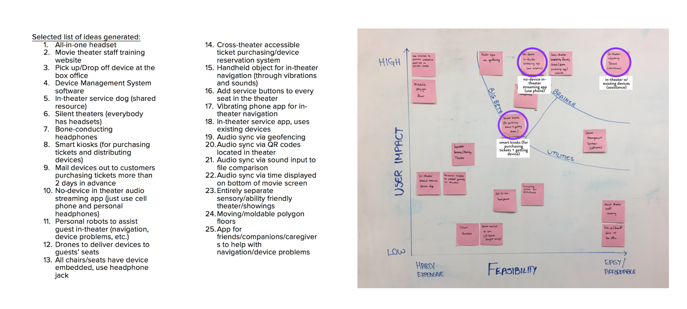2.2 Idea Development
After the first wireframe session, I then quickly generated three storyboards to visualize users' new movie watching journeys for these concepts. This methods helps the team to build empathy and critique towards new concepts. This help the team achieve an agreement that Concept 2 can not only promote indepence by reducing associate-customer interaction to the minimum, but also less likely to fail, leverage on users' ow
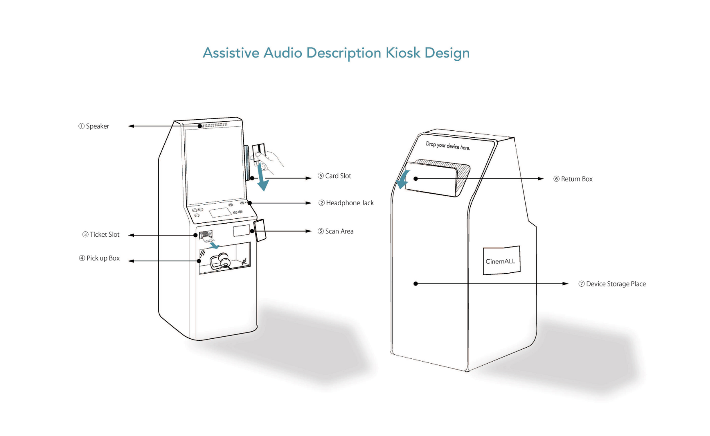Design Alternative 1 - Smart KioskThis solution will aim to cut out interaction with theater associates, who are often times undertrained and cause unnecessary frustrations for visually impaired moviegoers. Additionally, we envision the kiosks to be a universal solution and a one-stop shop for all moviegoers to purchase or pick-up tickets and retrieve assistive devices.
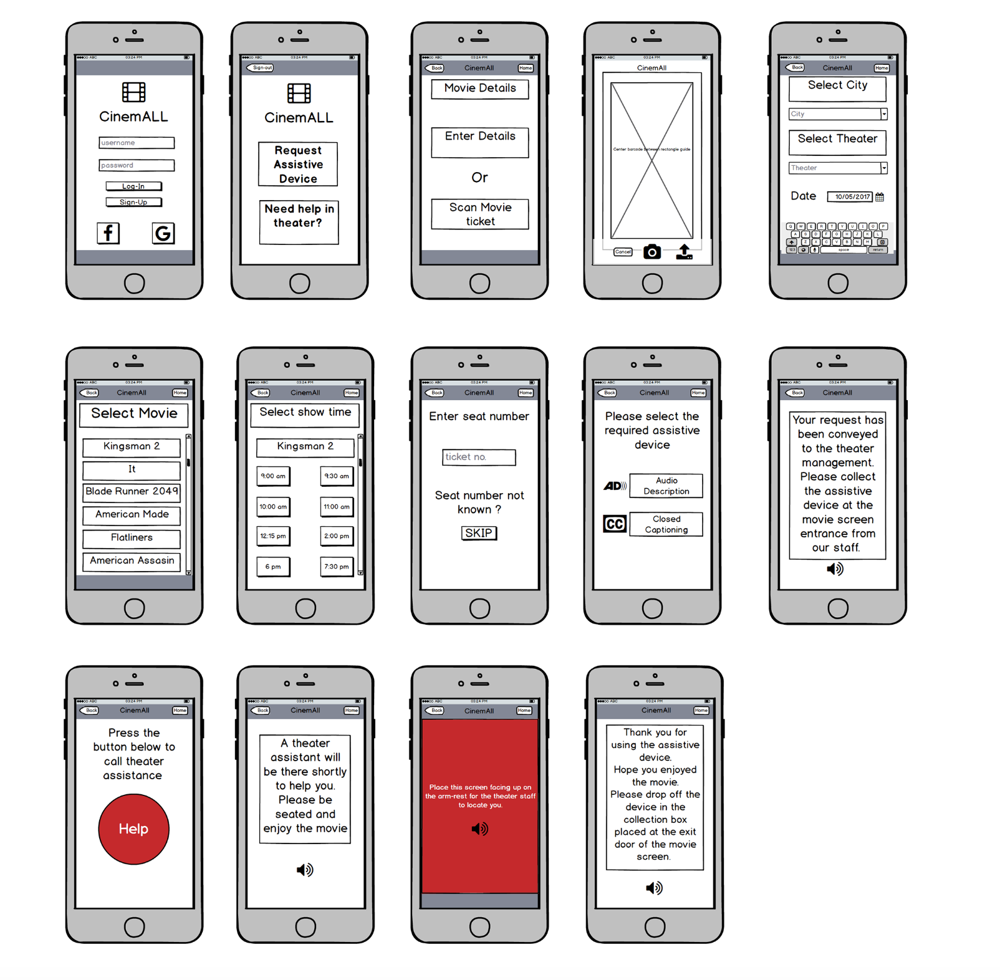Design Alternative 2- In-theater Service App, leveraging existing devices
This solution aims to be low cost, as theaters won’t have to replace their devices. Here, instead we will pair users with devices before they arrive at the theater, therefore alleviating frustrations of interacting with under-trained staff.
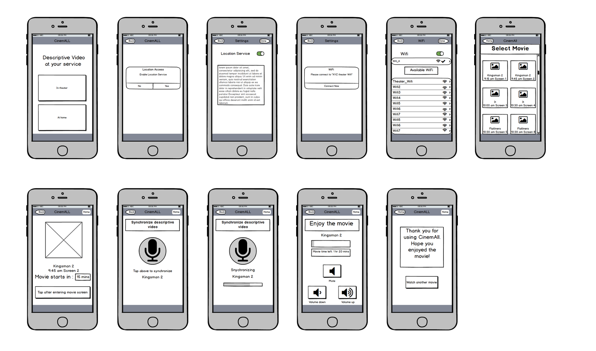Design Alternative 3- In-theater Audio Streaming App, cutting out existing devices
This solution aims to cut down on the learning curve by using the device users already have with them, their smartphone. Users won’t need to lug around additional clunky devices. This solution will also cut out the need to interact with theater associates who often provide incorrectly configured devices for the users.
2.3 Idea Comparison
After the first wireframe session, I then quickly generated three storyboards to visualize users' new movie watching journeys for these concepts. This methods helps the team to build empathy and critique towards new concepts. This help the team achieve an agreement that Concept 2 can not only promote indepence by reducing associate-customer interaction to the minimum, but also less likely to fail, leverage on users' own maintainance.
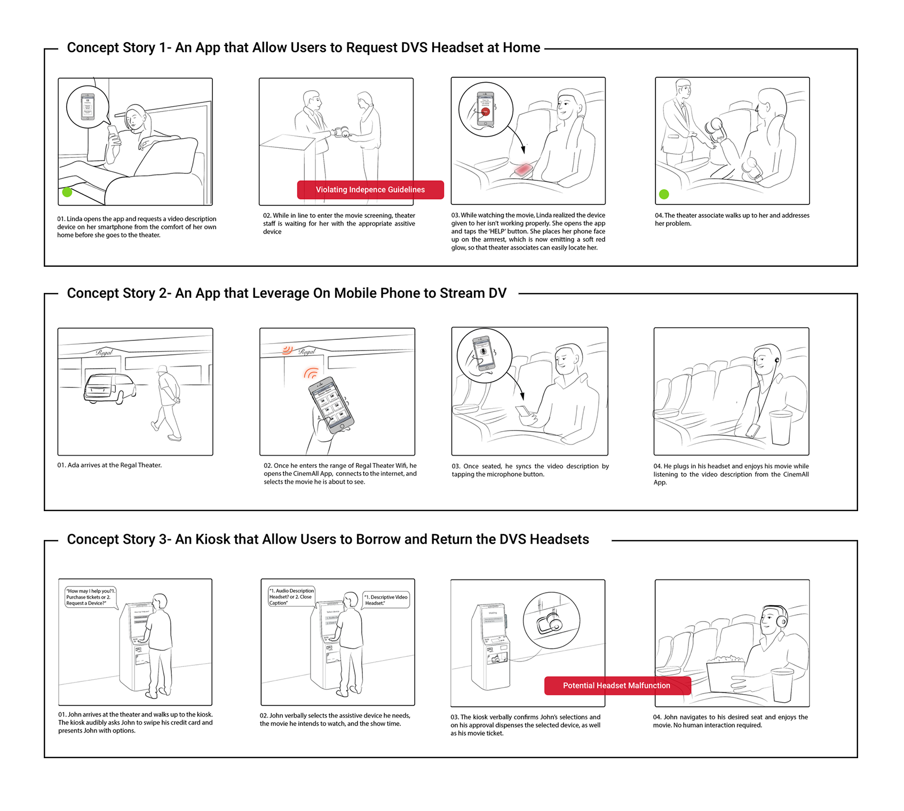2.4 Main Flow Design Iterations
Because our users are visually impaired, we did some preliminary testing to confirm that our colors and contrasts meet widely-accepted guidelines. We used the WebAIM web app to check our contrast ratios. We considered a 4.5:1 contrast ratio as passing based off of the w3 recommendations for accessibility[2]. Red was used because it has the longest wavelength, and provides the least stress on the eye when switching between it and dark contexts.
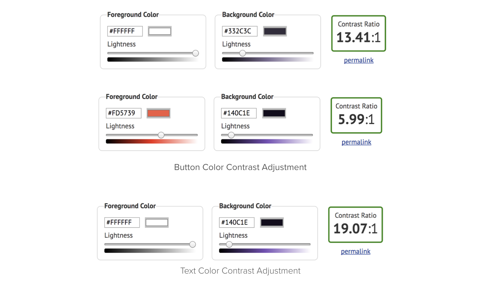
Additionally, we made sure to add patterned backgrounds to all clickable elements to double-encode the information so that users with poor color perception can easily distinguish different elements on the screens. Lastly, we made the text and buttons large to allow for user error when aiming, which might be more common among our users.

03. User Testing
We tried to scedule meetings with the Center for the Visually Imparied, however due to time confliction, the participants couldn't made it to our testing sessions. Thus, we borrowed the Visually Impaired Glasses. I was mainly resonsiple for taking notes, observing participants' behavior and then lead the qualitative data analysis. I visualized all the qualtivative feedback generated from think-aloud protocol on our flow chart. This techniques enabled the group to quickly overview users'feedback as well as communicate with other designers in our class.
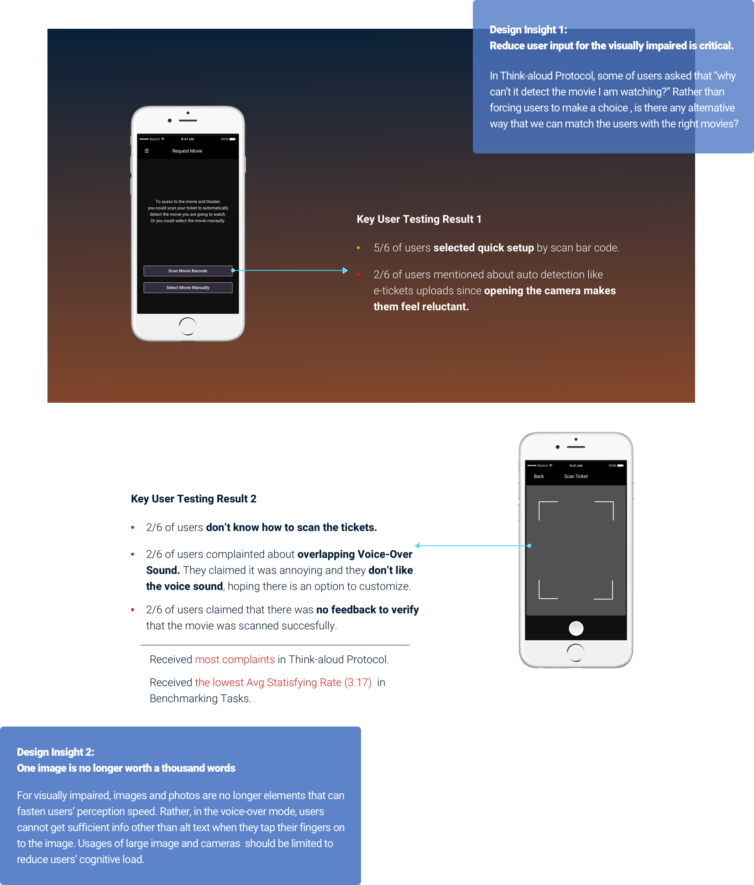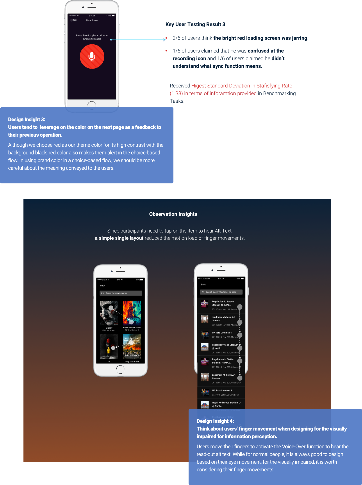
3.1 Benchmarking Tasks and SUS Score
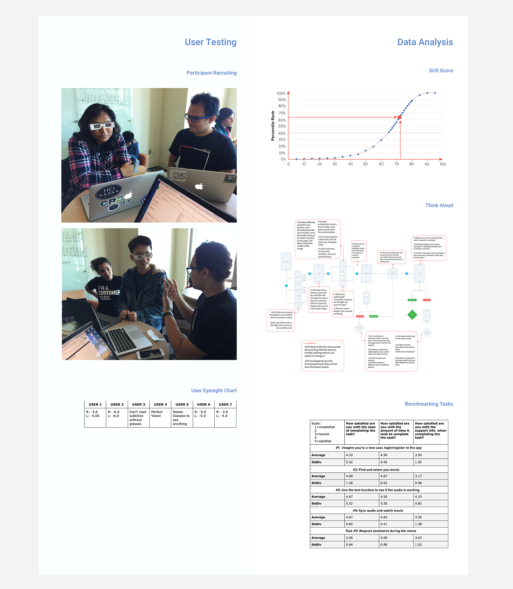4. Design Iterations
Allocate the Task to Reduce User Input
Through user testing, we discovered that users prefer some quick setup method to match them with the right movie. Several iterations were made to better convey this idea on the home page, which is an important anchor to user expectation.
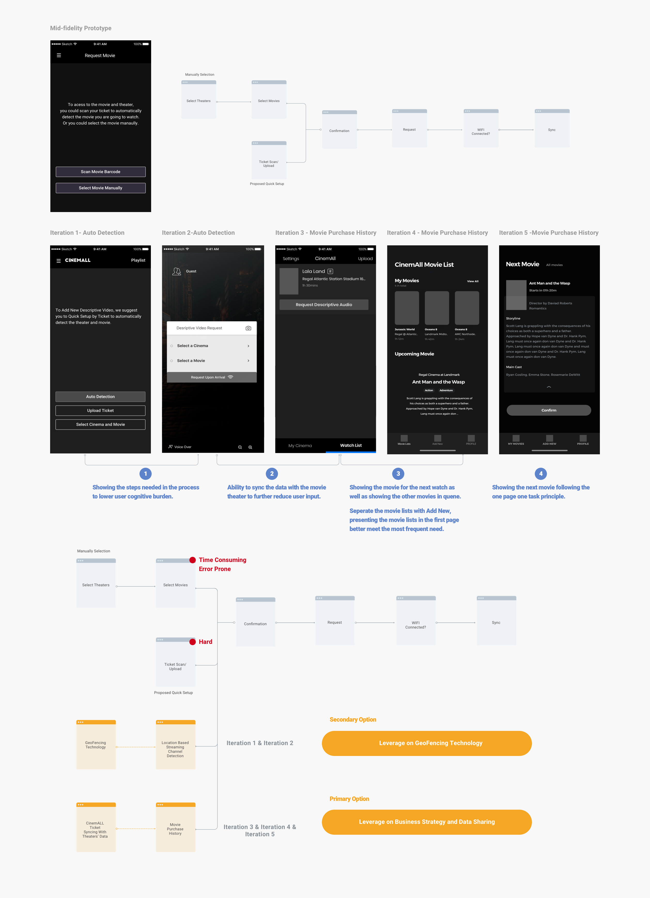High Contrast Color that Convey Right Emotion
We made several color testing to find a color that convey a confirmation meaning as well as conveying the highest contrast.

Reduce Finger Motions
For visually impaired who utilized voice-over, we discovered that finger movement is much more frequent than ordinary people. The visually impaired has to use the finger to activate the voice-over function to hear the description of interface elements. In the final design, two finger movement patterns were introduced to reduce back and forth finger movement.
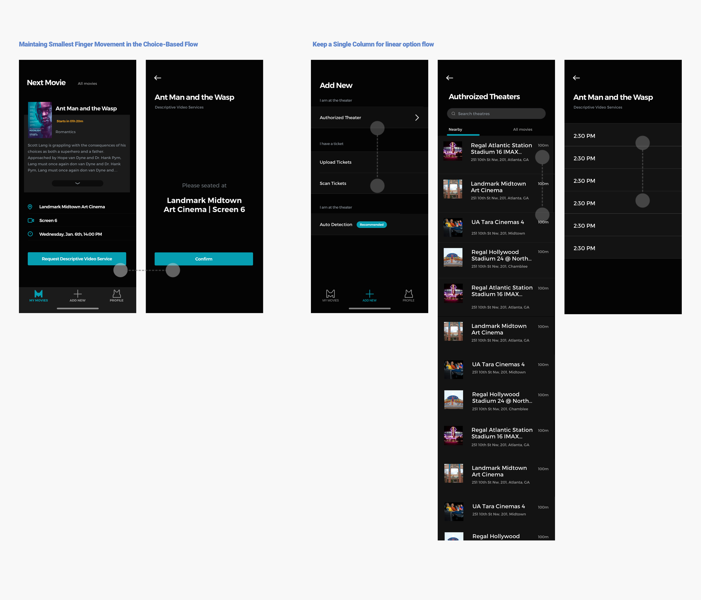4.1 Final Flow Chart
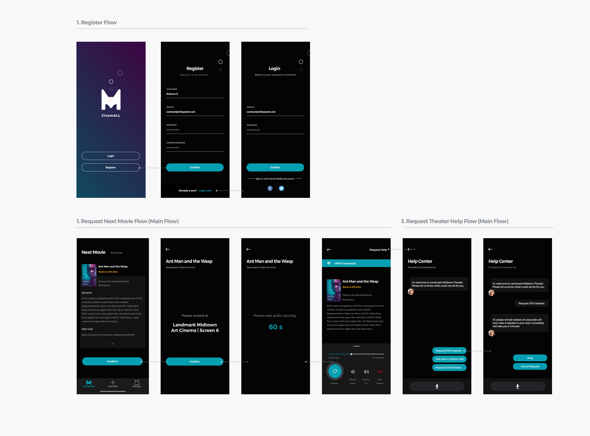 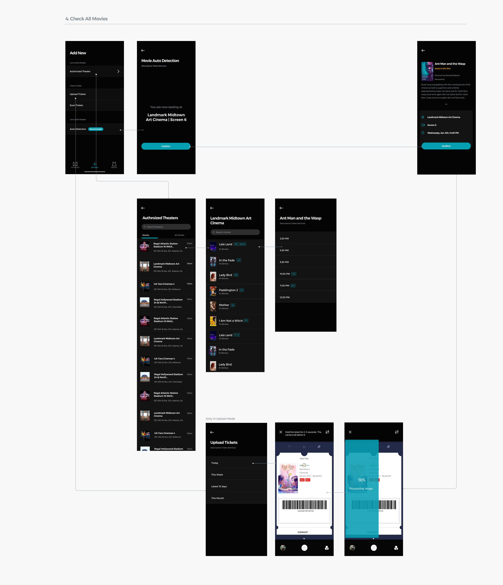05 Reflection
Considering the context when designing tasks. This App serves for a whole process from purchasing movie tickets to walk out the theater. Different contexts have high influence on how each stakeholder behave. For example, the manager at the Regal Cinema told us, they wouldn't provide service prior the arrival of the users. However, the visually impaired users would love to be prepared before their arrival. Considering different context limitations throughout the process is such a great lesson for me.